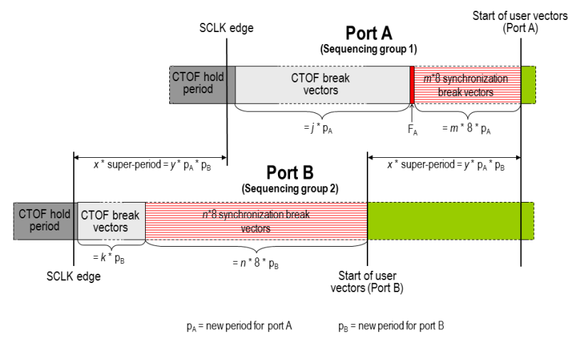

Phase synchronization across sequencing groups
Ports belonging to different sequencing groups cannot start or restart their user vectors simultaneously after a timing set change. In some situations, however, a partial synchronization is sufficient. Consider, for example, a continuous clock setup (Keep PLL alive), where the same clock pulse is repeated throughout the test. In this case the first user vector of the data port within a testsuite does not need to be synchronous with the first clock pulse at test start, it only needs to be synchronous with some clock pulse.
This can be ensured with phase synchronization. Phase synchronization is activated for a port by setting the PHASE flag for this port in the multi-port timing specification (see Multi-port timing specifications).
All the phase activated ports of a specification will be partially synchronized with each other. This means that the first user vector of such a port after a timing set change is synchronous with a certain user vector of every other phase activated port (except those that are currently executing a CTOF sequence or a synchronization block).
The partial synchronization is achieved by calculating the SCLK period as a common multiple of all periods of all phase activated ports (which is then called super-period). If any period value is auto-corrected by the system, the corrected value, not the one requested by the user, is used for the calculation of the super-period. The synchronization break vectors and a possible fine adjustment are determined in the same way as for ports belonging to the same sequencing group (see Synchronization within sequencing groups).
If you make use of phase synchronization, observe the following points:
- Setting the PHASE flag for a port will usually result in an expansion of the SCLK period, which will have a negative impact on the test execution time. Therefore you should set the PHASE flag only when it is really necessary. In particular, the PHASE flag is not needed for synchronization within one sequencing group.
- The SCLK period is calculated from the periods of all timing sets that are contained in the equation sets of the phase activated ports. Therefore make sure that you have no superfluous timing sets in your timing setup files in order to avoid unnecessary deterioration of the system performance.
- If you set the PHASE flag for many ports with large co-prime period
lengths, you may get an SCLK overflow. This will happen if the least common multiple of all the
periods of all phase activated ports exceeds
4194304 * period_resolution (if it is not directly divisible by 16), or
67108864 * period_resolution (if it is directly divisible by 16).
In this case try to modify the periods so that their least common multiple becomes smaller, or remove superfluous timing sets within the utilized equation sets.
Example
The following figure shows phase synchronization after the internal CTIM at test start for the two ports of the figure in Synchronization within sequencing groups, which are now supposed to belong to different sequencing groups and to have the PHASE flag set:

j, k, m, n, x, y are integers.
Since the start of the user vectors of port A is delayed by a multiple of pB, and k × pA + FA + m × 8 × pA is also a multiple of pB by
k × pA + FA + m × 8 × pA = k × pB + n × 8 × pB,
the first user vector of port A in the figure above is still synchronous with some user vector of port B.
Functional changes
- Introduced before SmarTest 6.3.2